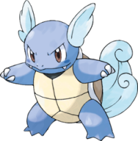

Recherche

Tortank - 009
Nom Anglais : Blastoise
Nom Original : Kamex, カメックス
Génération : Première
Type : Eau
Catégorie : Pokémon Carapace
Sexe : Femelle : 12,5% | Mâle : 87,5%
Description : Tortank est un bipède massif de la famille des tortues. Les extrémités supérieures gauche et droite de sa carapace sont ornées d'un canon à eau pouvant être orienté dans diverses directions. Formé au combat, sa tête s'est endurcie : le duvet de Carabaffe n'est plus présent et il possède désormais deux petites oreilles et une queue courte. Ses griffes se sont maintenant développées sur tous ses doigts et ses yeux n'ont pas changé de couleur.

Carapuce - 007
Carabaffe - 008
Tortank - 009